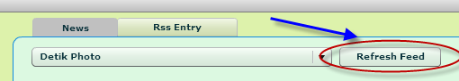
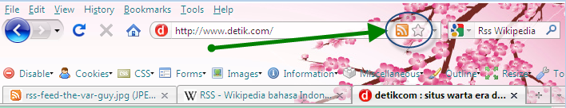

From Me [Josescalia]:
I'm sorry to say that untill now i still can't find out, how to automatically add or edit the feeder list of this application.
Brief:
The feeder list of this application is taken from the local file that stored on the installed application directory. Actually this file is an XML file, so if you knew a little bit about the xml-pattern, i think it's easy enough for you to find out how to add or edit this feeder list.
Please follow this step to add or edit the feeder list:
- Open the directory of this Flex Rss Reader installed application.
- Find the rss_feeder.xml file, and then right click the file, and click edit.
- After a text editor appeared, please check the contents of the file, to understand a little bit about the xml structure of this file.
This is the example of this file's content:
<?xml version="1.0" encoding="windows-1250"?>
<feeder>
<rss_list>
<id>1</id>
<label>Detik.com</label>
<data>http://rss.detik.com/index.php/detikcom</data>
</rss_list>
<rss_list>
<id>2</id>
<label>Detik Photo</label>
<data>http://rss.detik.com/index.php/foto</data>
</rss_list>
</feeder>
Now you can see, each row of the feeder was taken from the block of the rss_list nodes.
The id node represent each ID of the feeder, the label node represent the name of feeder, and the data node represent the link of the rss feeder from the websites.
- You're free to edit the name or the link of the feeder as long as you still following the correct pattern of this xml file.
- When you want to add a new feeder to the list, you just can copy the rss_list node blocks and put it under the last block of the rss_list block node, continue the number of the ID node, give the name of your new feeder at label node, and then put the Rss Link on the data node.
- After finish add or edit the rss list, just save the file and then close the file. And in the main application of this Flex Rss Reader, click the refresh button besides the combo box list.

How to find out a website Rss Feeder
Rss is a link provided by a website that serves as a reviewer of the news headlines on their website.
The link shoud be automatically generated by an engine of the website.
When you use mozilla firefox to open a website and you find the image on the url address like the picture shown above that mean the website have a rss feed

Simply click the icon and you will see Mozilla Firefox will display the rss feed as a news feed in firefox.
For your information, Mozilla Firefox has its built-in Rss Reader.
The Link of rss feed that you can copy and insert it into the rss_feeder.xml is the String on the url.
Today, it's the era of reading the news by reading the headline first, and when you are interesting of read the whole new you can continue read them more by clicking the provided link.
Flex Rss Reader is the tool that you can use as a desktop application, and you can bookmark many of the Rss Feed as much as you desire without open it one by one in your browser.
Thank You for using this application.
Regards
Josescalia
http://josescalia.blogspot.com
http://josescalia.worpress.com